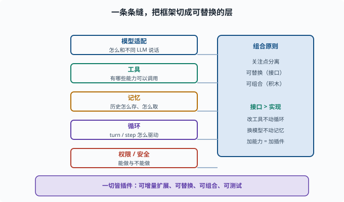

框架设计原则：为什么"一切皆插件"是有效范式
目标：理解 Agent 框架设计的关注点分离、可替换、组合性。读完这一页，你能说清为什么"一切皆插件"能让系统既灵活又可维护，而不是堆成一个巨无霸。
从"能跑"到"能扩展"
第八章我们学会了把模型、工具、记忆、循环装进一个 Agent。但真实产品的难点不是"写一个能跑的 demo"，而是：
不同用户要不同的工具/模型/记忆策略
要加新能力而不改坏旧的
要能组合、能替换、能定制
要可测试、可观察、可安全
这些需求逼着我们把 Agent 的设计从"一段写死的代码"提升为一套可组合的框架。
关注点分离：把"什么"和"怎么做"分开
框架设计的第一原则是关注点分离（separation of concerns）：
模型适配：怎么和不同 LLM 说话
工具：有哪些能力可以调用
记忆：历史怎么存、怎么取
循环：turn/step 怎么驱动
权限/安全：能做与不能做
每一块只关心自己的事，通过清晰的边界互相协作。这样改"工具"不影响"循环"，换"模型"不用动"记忆"。

上图把"能跑起来的一团逻辑"拆成了几根并行的轨道：模型适配、工具、记忆、循环、权限/安全各占一条缝，彼此只通过稳定的接口相接。右侧罗列的是支撑这套切分的组合原则——关注点分离、可替换、可组合、最小安全面。正是因为有这些缝，改动才能被限制在单条轨道里，而不是牵一发动全身。
可替换性：接口比实现重要
要让部件"可换"，就要定义接口、隐藏实现：
`我收发消息`（接口） 而不是 `我是 OpenAI SDK`（实现）
`我读写文件`（接口） 而不是 `我用 xxx 库`
只要接口稳定，底层实现随便换：换供应商、换存储、换工具，都不动其它部分。这是 09-02 能力缝的思想来源。
组合性：小积木拼大系统
好的框架让"能力"像积木：按需拼装，而不是预装所有。
用户 A：只需要 +文件 +shell
用户 B：只需要 +web 搜索
用户 C：+文件 +shell +web +审批
组合性让系统"最小可用 + 按需扩展"，减少无关能力带来的安全面和复杂度（09-06）。
为什么"一切皆插件"
deepseek-harness 的核心范式是 everything is a plugin（一切皆插件）。它的好处：
可增量扩展：新能力 = 新插件，不动核心
可替换：插件可插可拔
可组合：不同插件搭成不同的 agent
关注点分明：每个插件管一件事
可测试：小插件易测
这也契合 02 讲过的"模块化 + 良好接口"工程习惯，只是放大到了整个 agent 系统。
"一切皆插件"有一条纪律底线
插件自由组合的前提是每个插件都守规矩。仓库的 AGENTS 约定里有几条直接决定这套范式能否成立的纪律，值得在这里先见一面（后面各页都会用到）：
注册即效果：一切贡献走 ctx.effect()/ctx.on()，返回销毁器
插件不改循环：新行为挂在文档化的扩展点上，不碰 agent-loop 核心
模型可见必入日志：给模型的新输入必须对应一条会话事件
配置可校验：部署差异是 Config 字段，不是代码里的常量
没有这些纪律，"自由组合"会退化为"互相踩踏"：一个插件忘了清理监听器，另一个直接改循环内部，系统依然会烂掉。范式给自由，纪律保自由——这是读框架源码时最值得体会的平衡。
一个框架应有的"骨架"
一个可维护的 agent 框架通常有：
核心循环：turn/step 驱动（[09-04](09-04-event-loop.md)）
扩展点：能力缝/插件（[09-02](09-02-capability-seam.md)、[09-03](09-03-plugin-composition.md)）
数据：可追溯会话日志（[09-05](09-05-session-log.md)）
边界：作用域与权限（[09-06](09-06-scope-permission.md)）
运维：可观测与恢复（[09-09](09-09-observability.md)、[09-10](09-10-state-recovery.md)）
设计原则速查
关注点分离：各管一事，边界清晰
接口稳定：面向接口不面向实现
可组合：按需拼装能力
可替换：换实现不动架构
可追溯：一切决策可回放
最小安全面：只暴露需要的能力
思考题
- 什么是关注点分离？它带来什么好处？
- 为什么"接口比实现重要"？举一个例子。
- 组合性如何影响安全面？
- "一切皆插件"有哪些好处？
- 一个可维护的 agent 框架通常包含哪几个部分？
参考答案
- 把模型适配、工具、记忆、循环、权限等按关注点切分，每块只管自己并通过清晰边界协作。好处是改一块不影响另一块，系统可维护、可测试。
- 因为只要接口稳定，底层实现可随时更换而不影响其它部分。例如定义"我收发消息"这个接口，底层用 OpenAI、DeepSeek 或本地模型随便换，其它代码不用动。
- 组合性让用户只装上需要的能力，减少无关插件暴露的攻击面与复杂度（最小可用+按需扩展），从而降低安全风险（09-06）。
- 可增量扩展（新能力=新插件不动核心）、可替换（可插可拔）、可组合（拼成不同 agent）、关注点分明、小插件易测试。
- 核心循环（turn/step）、扩展点（能力缝/插件）、可追溯数据（会话日志）、边界（作用域与权限）、运维（可观测与恢复）。
下一步
- 想看清"能力缝"这个核心抽象 → 09-02 能力缝。
- 想看插件如何组合起来 → 09-03 插件化组合。
- 想复习工程模块化 → 02-06 读 TypeScript 仓库。